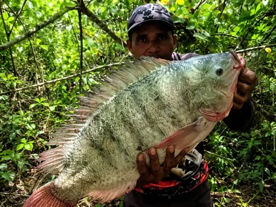
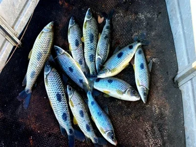
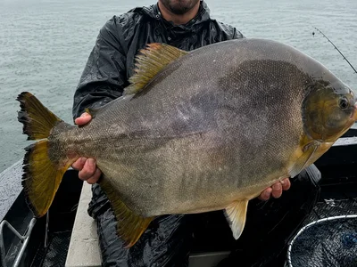
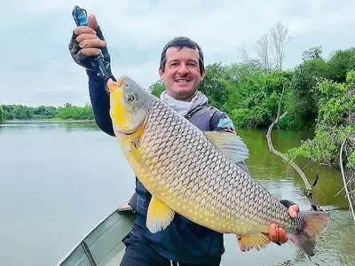
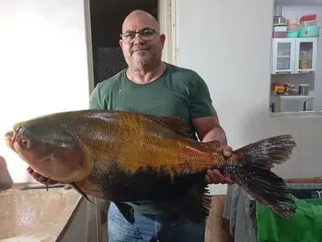
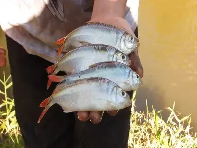
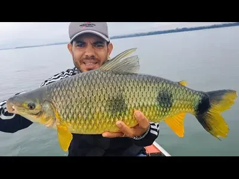

Uma Receita Certa
pra Cada Peixe.

Tilápia
A Rainha das RepresasMassa cozida com suco cítrico e choque térmico — firme, perfumada e irresistível pra tilápia.

Piau
O Terror do FubáDoce, amarela e perfumada. Bolinhas miúdas do jeito que o piau ama — é covardia de tão eficaz.

Pacu
O Comilão do Pão de QueijoPão de queijo com ovo, sem cozinhar — liga elástica que o pacu não consegue roubar sem ferrar.

Piauçu
A Base do Grude InfalívelMilharina e fubá numa combinação que dissolve devagar na água e chama o cardume inteiro.

Caranha
A Força do Suco e do ÓleoUm pacote de suco por dentro, outro por fora. A casquinha perfumada que a caranha sente de longe.

Lambari
Simples, Barata e EficazMassa cozida com choque térmico — o lambari ladrão não consegue mais roubar sem morder de verdade.
Carpa
O Toque de Alho que Não ResisteAveia, fubá, milho e alho puro. O cheiro espalha na água e chama o cardume inteiro.

Piapara
A Colenta — Borrachuda e InfalívelArroz cozido, prensado com sargento — a isca que fica firme no anzol mesmo na correnteza forte.
Técnicas de Mestre
Choque térmico, água sem cloro, aromatizantesOs detalhes que fazem a massinha caseira superar qualquer industrializada — e que ninguém explica abertamente.

Massa Carnívora de Fígado
Para os peixes grandes e manhososFígado fresco, alho puro e o efeito névoa — a receita braba pra pacu, piauçu e matrinxã no fundo.